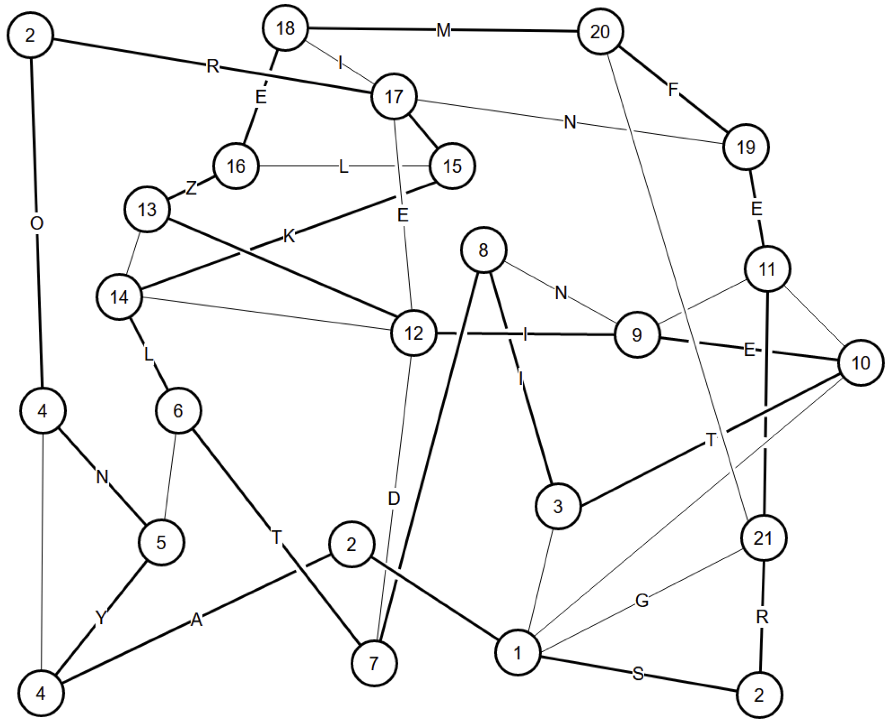
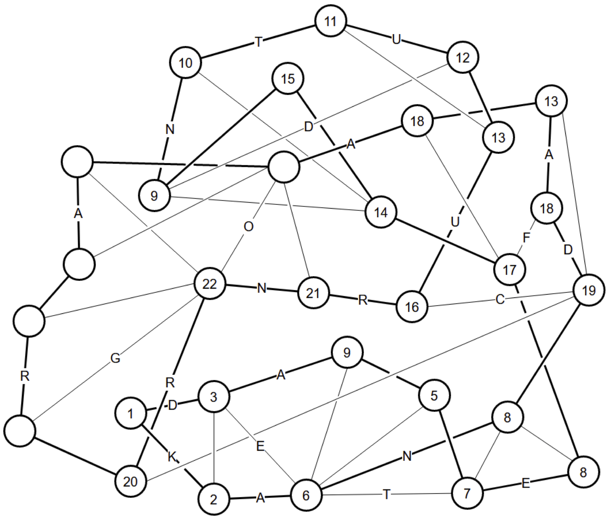
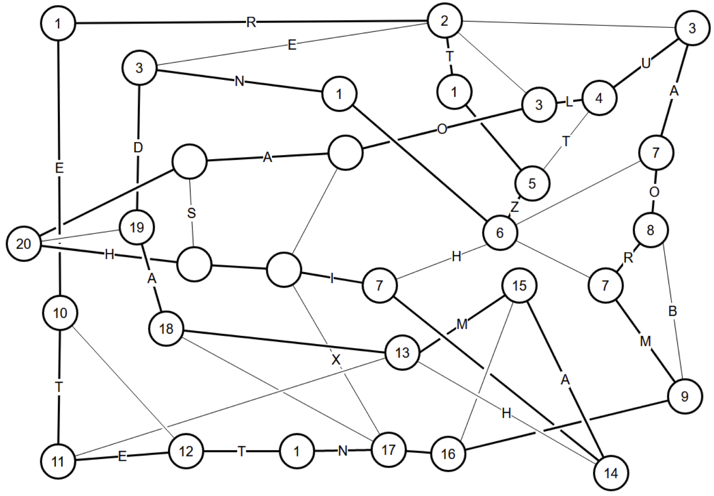
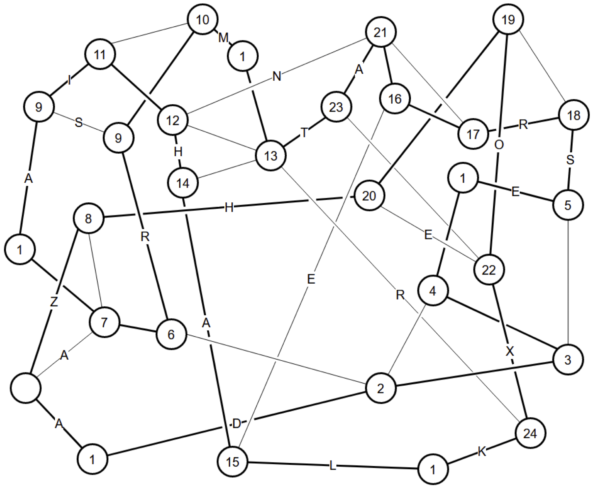
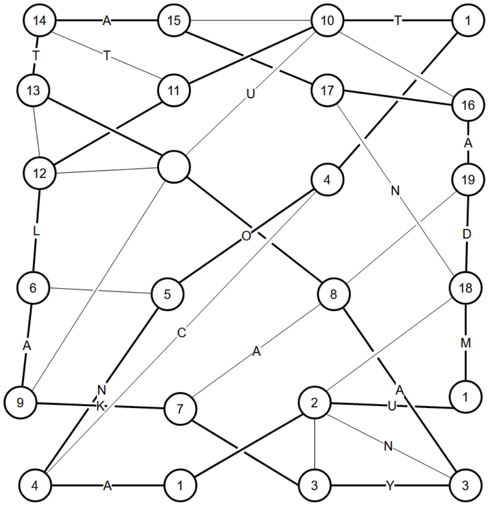
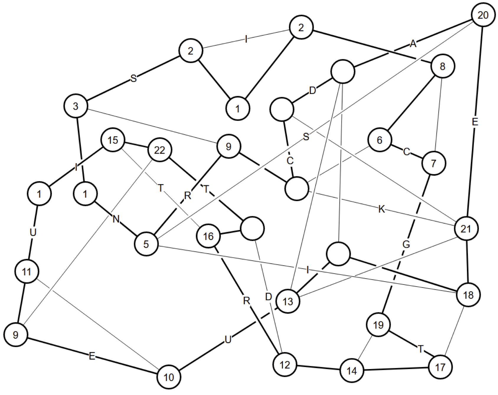
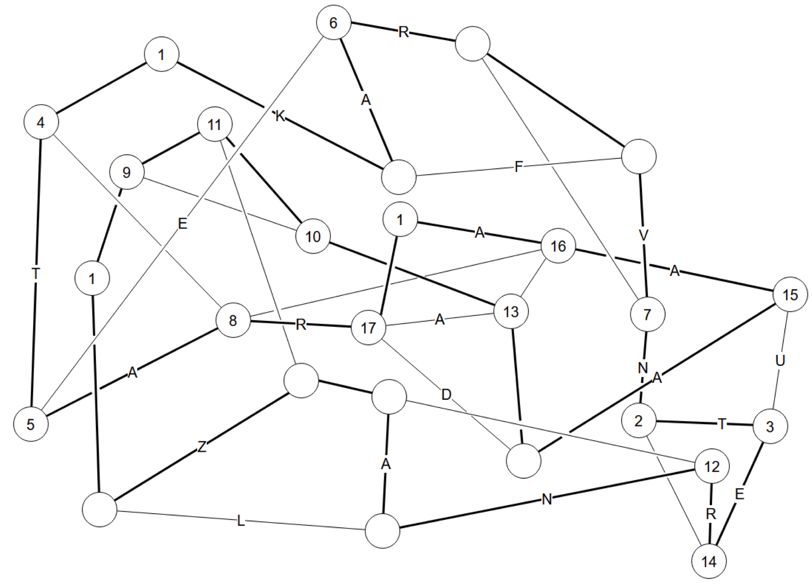
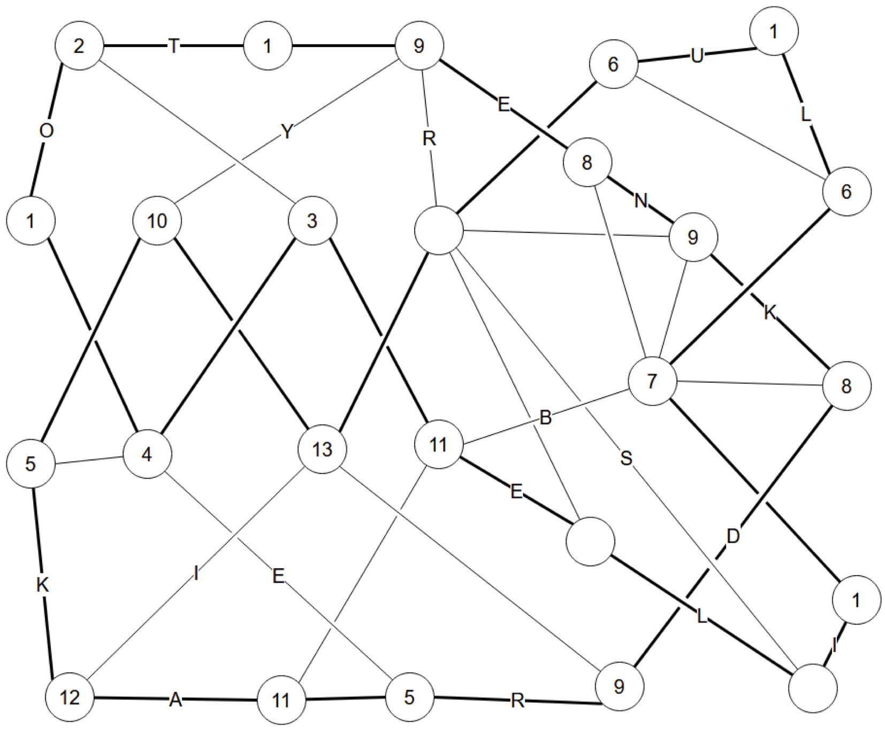
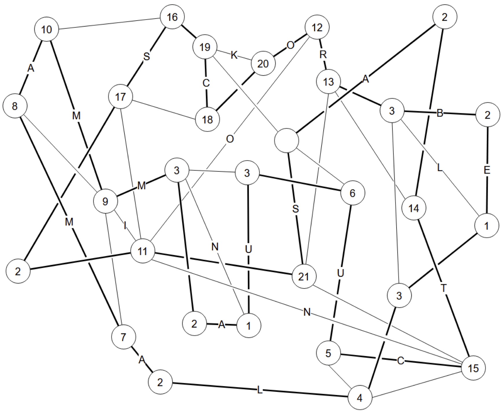

Each diagram is a Hamilton Path puzzle. Their solutions are below; complete walkthroughs are farther below. Numbers (not always unique) have been added to the nodes only to label them for the walkthroughs.
(1)
(2)
(3)
(4)
(5)
(6)
(7)
(8)
(9)
The letters on the unused segments, read down within each diagram, seem to spell nothing, but the topmost unused letter in the first eight puzzles spells out IDENTIFY. The full message is obtained by reading all the topmost letters, then all the second letters, etc.
IDENTIFY KNOTS USE ROLFSEN TABLE CHECK USING BRAID INDEX AND LENGTH.
Due to the segments which cross each other, the loop in each puzzle forms a knot. The next task is to identify each of these knots, using the "Rolfsen table", i.e. the numbering system given to prime knots in the appendix of the classic textbook Knots and Links by Dale Rolfsen; the book can be found online in pdf form, and the table can also be found at sites such as this one.
Each puzzle solution is, in fact, shown in the same presentation as its representative in the table, up to artistic license. As a check, the braid index and braid length, two invariants of knots which are listed for each knot at that site, were provided in a table at the end of the puzzle. All the knots used have different pairs of numbers for these two invariants.
| Puzzle | Knot | Braid index | Braid length |
|---|---|---|---|
| 1 | 812 | 5 | 8 |
| 2 | 921 | 5 | 10 |
| 3 | 918 | 4 | 11 |
| 4 | 105 | 3 | 10 |
| 5 | 74 | 4 | 9 |
| 6 | 52 | 3 | 6 |
| 7 | 41 | 3 | 4 |
| 8 | 73 | 3 | 8 |
| 9 | 1011 | 5 | 12 |
The final extraction is to read off the subscripts of the identified knots, as letters: 12-21-18-5-4-2-1-3-11 = LURED BACK.
Three nodes marked "2" have only two edges, so those are in the loop.
At node "1", we now have two edges in. All other edges are out.
Node "3" has two edges left, they are in.
The two nodes marked "4" cannot be connected, because there would not be enough edges left at node "5". So both "4"s must connect to "5". Then the other edge from "5" is out. And node "6" has only two edges left, so they are in.
Nodes "7" and "8" must connect. If they didn't, they would each have only two edges available, which must be in. "7" would connect to "12", and "8" would connect to "9". "9" then can't connect to "10" because it would close a cycle. So "10" would connect to "11", and "9" couldn't connect there either because it would close a cycle. So "9" would connect to "12", which would be finished, so its other edges would be out. This would leave "13" with two edges, which would be in. "14" would be full, so its other edge would be out, leaving "15" with two edges, which would be in. This completes "16" and "17", leaving not enough edges at node "18".
So "7" and "8" connect, and their other edges are out.
"17" and "19" cannot connect. If they did, "17" would be done, and its other edges would be out. This would leave "15" and "18" with only two edges, which would be in. That would finish "14" and "16", leaving not enough edges at node "13".
So that edge is out, which leaves "19" with only two edges, which are in.
Nodes "18" and "20" must connect. If they didn't, then "18" would have two edges left, finishing "17", so "15" would have two edges left, finishing "14" and "16", leaving not enough edges at "13".
So "20" is finished, and its other edge is out. This leaves "21" with just two edges, and it connects to "22". This finishes "22", which determines "9".
"17" and "18" are ends of a fragment, so they can't connect, and "18" goes to "16".
"12" and "14" are ends of a fragment, so they can't connect.
"13" must connect to "16", else it will close the loop with "12" and "14". That determines "15", which completes "14", which determines "13" and we're done.
Two nodes marked "1" and "15" have only two edges, so those are in the loop.
Those loop fragments can be closed by an edge, so that edge is out.
For each of the edges marked "2"-"8" in turn, we have the following logic: there are only two edges left, so they are in, and the loop can now be closed by one edge, which is out.
The section of nodes marked "9"-"15" is self-contained, with only two exits to the rest of the diagram. So those two exits must be in the loop: "13" to "16" and "14" to "17". Inside that section, this finishes "14", which determines "10", which finishes "9" which determines "12". Outside the section, we have finished "17", which determines both nodes marked "18", which finishes "19", which determines "16" and "20". Most of the diagram is now a single fragment, which would be closed by one edge so it's out, and that determines "21". This finishes "22", closing off many remaining edges, determining the rest of the loop.
Four nodes marked "1" have only two edges, so those are in the loop.
Node "2" has two edges in, so the rest are out.
This causes the three nodes marked "3" to have only two edges, so those are in.
This completes "4", which determines "5", which completes "6", which determines the three nodes marked "7", which completes "8" and determines "9".
Nodes "10" and "12" cannot connect, because that would leave too few edges at "11". This determines "10" and "12" and finishes "11", whose other edge is out.
Nodes "13" and "14" cannot connect, because that would leave too few edges at "15". This determines "13" and "14" and finishes "15", which determines "16", which finishes "17", which determines "18", which finishes "19", which determines "20", and avoiding having a small loop at 20 finishes the diagram.
Five nodes marked "1" have only two edges, so those are in the loop.
Nodes "2" and "3" must connect, else "3" uses its other two edges and makes a small loop. This finishes "2" and determines "4", which finishes "3" and determines "5". It also determines "6", which finishes "7" and determines "8".
The two nodes marked "9" are the ends of a fragment, so cannot connect. This determines them, which finishes "10" and determines "11". Now "12" and "13" are the ends of the fragment, so they cannot connect. They also cannot both connect to "14" because would also close the small loop, so "14" must connect to "15". This finishes "15", which determines "16". Its neighbors can't connect lest they close a loop, and this determines "17", which finishes "18", which determines "19", which finishes "20".
Nodes "21" and "22" are the ends of a fragment. They cannot both connect to "23". So "23" must connect to "13". This finishes "13", which determines "14" and "24", and one more connection finishes the loop.
Three nodes marked "1" have only two edges, so those are in the loop.
This finishes node "2", so its other edges are out. This finishes the two nodes marked "3".
The two nodes marked "4" can't connect, because that would not leave enough edges for "5". So they both go to "5". That determines "6".
Nodes "7" and "8" are the ends of a fragment, so they cannot connect. That determines "7", which finishes "9".
Nodes "10" and "11" must connect. If they didn't, then this would determine "11", finish "12", determine "13", finish "14", determine "15", finish "10", and determine "16", but that would close a loop that doesn't visit every node.
So "10" is finished, and this determines "15" and "16", which finishes "17", which determines "18", which finishes "19", which determines "8".
Nodes "11" and "14" are the ends of a fragment, so they can't connect. This determines both of them, which finishes "12", and one more connection finishes the loop.
Three nodes marked "1" have only two edges, so those are in the loop.
One of those loop fragments can be closed by an edge, so that edge is out. This determines both nodes marked "2", which finishes "3", which determines "4", which finishes "5", which determines "20".
Nodes "6" and "7" must connect, else "7" will end up closing the loop fragment.
Nodes "19" and "7" must connect, else "7" will end up closing the loop fragment.
This finishes "7", which determines "8", which finishes "6".
Nodes "9" and "10" must connect, else too many edges will come in to "11".
Nodes "9", "10", "11" are part of a section with only two exits, which are at nodes "10" and "12". So those exits must be in, with "10" connecting to "13" and "12" connecting to "14". (A different way to look at it, in case it helps: if either of those exits is not in, you will quickly form a small loop.)
This finishes "10", which determines "11", which finishes "9", which determines "22", which finishes "15", which determines "16".
Nodes "19" and "14" cannot connect, because that would leave not enough edges at "17". This determines "19" and "14", which completes "17", which determines "18", which finishes "21", which determines the rest.
Three nodes marked "1" have only two edges, so those are in the loop.
Nodes "9", "10", "11" are part of a section with only two exits, which are at nodes "10" and "12". So those exits must be in, with "10" connecting to "13" and "12" connecting to "14". (A different way to look at it, in case it helps: if either of those exits is not in, you will quickly form a small loop.)
Node "9" must connect to "11", else node "10" will have too many edges. That determines "9", finishes "10", and kicks off several other determinations until we complete "12".
Node "2" must connect to "3", else node "14" will have too many edges.
Nodes "4", "5", "6" are part of a section with only two exits, which are at nodes "7" and "8". So those exits must be in, with "7" connecting to "2", and "8" connecting once to its left and once to its right. This finishes "2", which determines "14", which finishes "3", which determines "15", which finishes "16". Now we know that the rightward connection from "8"must be "17", which finishes "17" and determines "13".
Nodes "4" and "8" cannot connect, else there would be not enough edges for "5". This determines "4" and "8", which finishes "5", which determines "6", and the end is clear.
Four nodes marked "1" have only two edges, so those are in the loop.
This finishes the node marked "2", which determines "3", which finishes "4", which determines both nodes marked "5".
The two nodes marked "6" and cannot connect, else we would close a small loop. That determines these nodes, which finishes "7", which determines the nodes marked "8", which finishes the nodes marked "9", which determines the node marked "10".
The two nodes marked "11" are the ends of a fragment, so they cannot connect. This determines them. This finishes "12", which determines "13", and one more edge finishes the diagram.
Five nodes marked "2" have only two edges, so those are in the loop.
Three of those loop fragments can be closed by an edge, so that edge is out.
In two of those places ("1"), there is a node that only has one more edge, so the edge is in.
Those fragments can again be closed by an edge, so the edge is out.
The four nodes at the ends of those edges ("3") now have only one more edge, so that edge is in.
At node "4", we now have two edges in. All other edges are out.
Node "5" has two edges left, they are in.
Node "6" has two edges in, the other is out.
Nodes "7" and "8" must connect. If they didn't, they would each have only two edges available, and so both would connect to 9, but it already has a connection.
Since "7" connects to "8", the other edge from "7" is out.
Similarly, "8" must connect to "10", else too many things connect to "9". And the other edge from "8" is out.
Node "9" cannot connect to "11". If it did, then eliminating the other edges from "11" would leave "12" with only two edges, and that would finish "13" and leave "14" and "21" with only two edges, but that would leave "15" with three edges in.
Therefore "9" must connect to "10". The other edge from "10" is out, leaving "16" with only two, which finishes "17", whose other edge is out, leaving "18" with only two, which finishes "19", whose other edge is out, leaving "20" with only two.
Now there is a fragment going from "11" to "12", so their edge which would close the fragment must be out. That leaves "12" with only two, which finishes "13", which leaves "14" with only two, which finishes "15", which leaves "21" with only two, to complete the path.